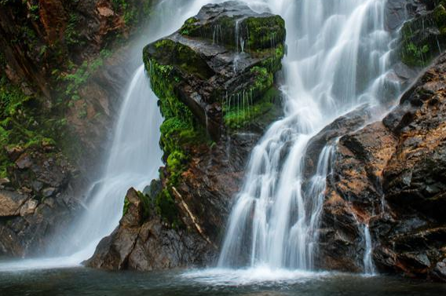
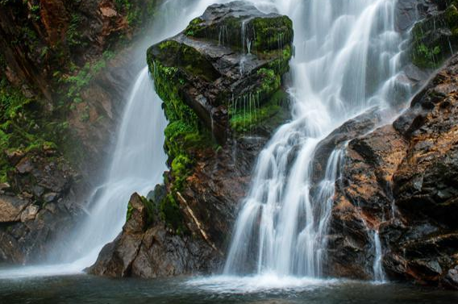
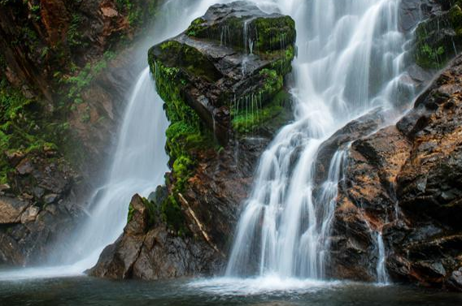

世界野生茶树王的故乡（千家寨-----------------------Welcome to QianJiazhai！
全长大约500公里的哀牢山，景观不绝如缕。除却人类改造大地的史诗般艺术——哈尼梯田外，这里更多的是隐秘的大自 然风情。哀牢山中段的普洱市镇沅县千家寨，山势陡峭，瀑布高悬；森林密布，河水清澈。这里如同是大自然的私密闺房， 原始而粗犷的生命，各自以最舒坦的姿势，在最恰当的地方自由生长。
千家寨所在的镇沅县九甲镇，被茶山环绕着。

哀牢山及无量山地区，是普洱茶的原产地。多少年来，这两座大山的深沟密林之中，一直响着贩茶马帮的驼铃声。如今的镇沅
县，依旧分布着多处大大小小的古茶山。而千家寨，哀牢山的隐秘之地，40多平方公里的原始森林里，藏着2700年的野生古
茶树王。


千家寨得名，据说是因为清朝咸丰年间，彝族农民领袖李文学曾在这里安营扎寨。当一群反抗900多万平方公里土地上统治者
的人们，来到这片森林安营扎寨的时候，是如何面对这种隐秘的伟大。同样很难想象，当第一个人类踏足这片森林，从一颗
野茶树上采摘叶片，品尝那苦涩与甘甜之后，他又是怀着怎样的心情，一定要把这种叶片培育、驯化，让这片山川染上茶香。


经过80多公里的山路抵达千家寨的时候，我们首先遭遇了一条瀑布。或绿色、或黄色、或棕色的植物中间，水直泻下来，直接
就抛洒在公路旁边，溅起水雾，沾染在手上、身上、脸上。似乎是对我们远道而来的欢迎，进门先涤去尘埃，洗掉疲惫。瀑
布落差并不大，在郁郁葱葱植物的簇拥之间，仿佛一条随风飘舞的白色丝带，穿过少女的长发，有点俏皮，充满活力。这条
瀑布名为“小吊水”。


大吊水位于千家寨半山腰，水流从两山峡谷中倾泻而出，成三级跌落，总落差约有100米，溢宽近20米。从千家寨山脚拾级而
上，不多时，就能听到水声震震，心中高兴，原以为很快就能见到大吊水瀑布。然而转过一个弯，还是石阶；再转一个弯，
依旧是陡峭的阶梯。原来，千家寨的阶梯行道有好几公里，坡度大于30度的才修台阶，小于30度的都还是斜坡路。可见山路
难走，好景不好走。待到终于走到大吊水瀑布脚下的时候，额头上都见了汗。但水声隆隆中，大家心里都生了一丝丝凉气。
只见一匹银练，跌下山来，摔倒石头上，分成几缕，再撞到悬崖上，积蓄更多水流，落入山下水潭之中。


告别大吊水，又踏上几乎直上直下的台阶，必须扶着栏杆。不然总是担心，一阵风来，便吹下山去。终于爬到大吊水顶端，
是一座横跨两山的小桥。桥名“彩虹桥”，站在桥上，脚下是瀑布，左手是百米悬崖，右手是高耸入云的崖壁。崖壁旁积着一
汪清泉，不见水流湍湍，但见水色清幽，崖壁上处处都是流水凿下的孔洞。丛生的青苔下，隐约水滴晶莹。


沿着河边一路向前，头顶树荫遮蔽，不见天日。间或跨过小河，桥都是砍一根木头，横在两岸。河里的水极清、极浅，看起
来便觉得凉生生的，撩一把洗洗脸，竟觉得仿佛给一群虫子咬了一样，凉得生疼。阳光透过树叶缝儿洒下来，在水上、在地
上、也在我们身上，溅得到处都是，不觉得刺眼，只觉得像是一朵朵亮晶晶的花儿，也随着一阵阵风颤颤巍巍。
 


走不多时，见到一幢幢木头房子长在林间，就到了千家寨管理站。这里原来就是李文学修筑的千家寨遗址。

穿过管理站，才算进了原始森林的中心地带。这里树木都很高，十几米的、二十几米的，随处可见。即使不过胳膊粗的新生小
树，也能长到十来米。生命在这里，似乎才是她们的本来模样。树木都竭力把自己往高了长，争夺属于自己的那片天空。


1号茶树王


3号茶树王


2700多年的1号野生茶树王座落在一个低矮的山头，尽情伸展着近20米高的身躯，枝叶几乎霸占了山头的整片天空。无须科学
考证，她站在那里，看起来就是一个王者。树身粗大，两人尚不能合抱。树根处摆着酒食，这是当地人对树神的礼敬。
一阵风来，海拔2600多米的哀牢山隐隐有些寒意。阳光明亮而不炽烈，抚摸着茶树王，这经历过太多时光洗礼的自然宠
儿依旧生发着新叶；阳光也抚摸着我们，我们的短暂生命，在这片林子里，在这颗茶树王下，相形见绌。